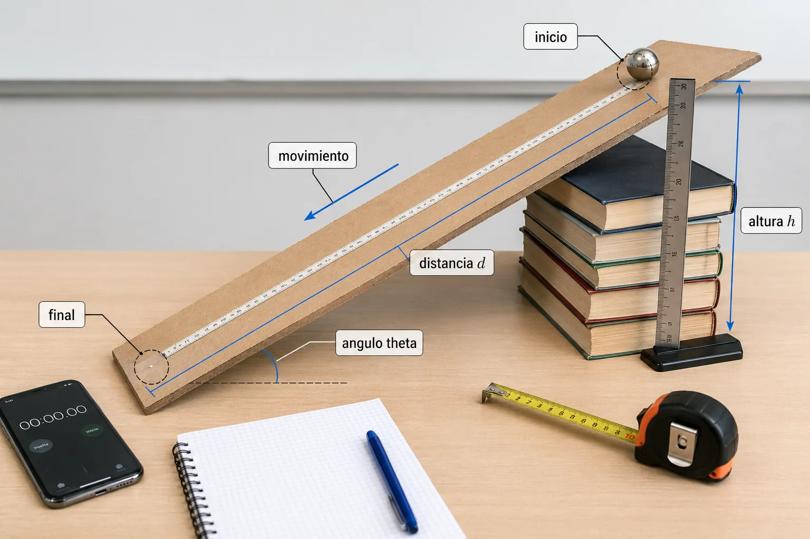
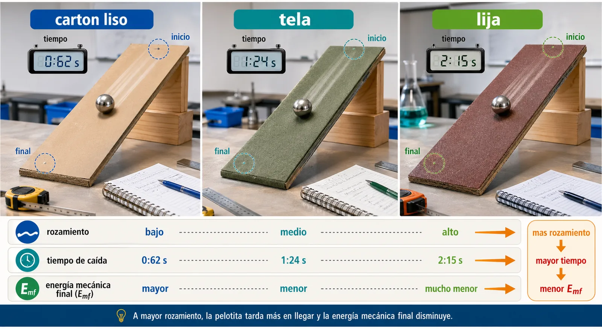
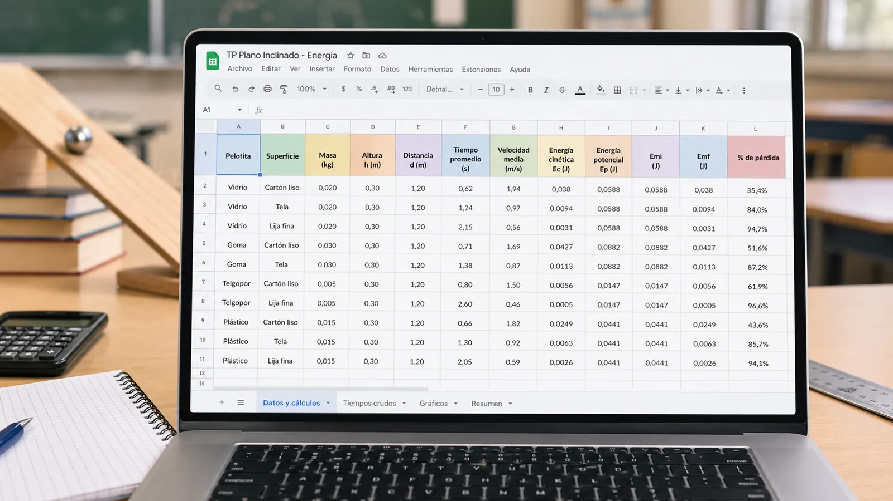
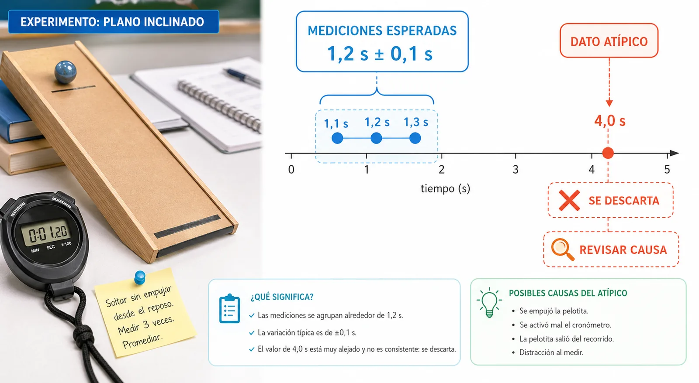
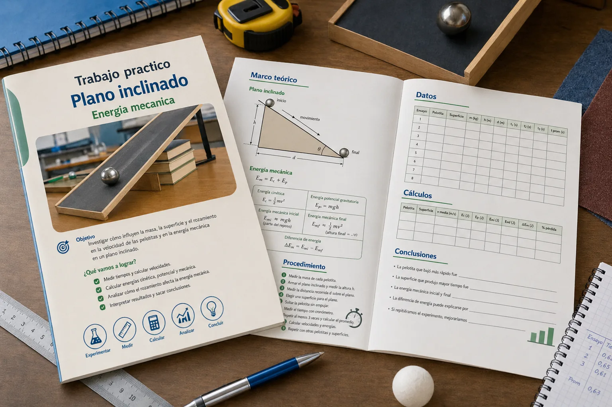

Cómo armar una buena hipótesis
Usen la estructura: Si cambiamos..., entonces esperamos que..., porque.... Debe mencionar una variable que modifican y un resultado que van a observar o calcular.
Física • Energía mecánica • Rozamiento • Método experimental
Una investigación escolar para medir, calcular y argumentar qué ocurre con la energía mecánica cuando una pelotita desciende por un plano inclinado real.
Nombre del trabajo: _______________________________
Integrantes:
1. _______________________________
2. _______________________________
3. _______________________________
4. _______________________________
Escuela: _______________________________
Curso: _______________________________
Profesor/a: _______________________________
Fecha: _______________________________
¿Cómo influyen la masa, la superficie de la pelotita, la inclinación del plano y el rozamiento en la velocidad y en la energía mecánica del sistema?
Antes de medir, formulen predicciones. Una hipótesis no tiene que acertar: tiene que ser clara, justificable y posible de comparar con los datos.
Usen la estructura: Si cambiamos..., entonces esperamos que..., porque.... Debe mencionar una variable que modifican y un resultado que van a observar o calcular.
Atención: escriban hipótesis comparables. Por ejemplo, "la lija producirá menor velocidad media que el cartón liso" se puede verificar con datos; "la lija es mejor" no alcanza como hipótesis física.
Hipótesis 1: tipo de pelotita. Si usamos la pelotita __________________, esperamos que su velocidad media sea __________________ porque _______________________________.
Hipótesis 2: superficie del plano. Si cambiamos la superficie del plano de __________________ a __________________, esperamos que el tiempo de caída __________________ porque _______________________________.
Hipótesis 3: energía mecánica. Esperamos que la energía mecánica final sea __________________ que la inicial porque _______________________________.
Hipótesis 4: conservación. Creemos que \(E_{mi}=E_{mf}\) se cumplirá / no se cumplirá exactamente porque _______________________________.
En esta sección deben reunir todos los conceptos físicos que necesitan para realizar los cálculos y explicar el fenómeno estudiado. No se trata de copiar definiciones sueltas: cada concepto debe ayudar a entender qué se mide, qué se calcula y por qué los resultados pueden cambiar.
Pregunta guía: si un concepto no ayuda a medir, calcular o explicar el movimiento de la pelotita, probablemente no es central para este trabajo práctico.
Un plano inclinado es una superficie inclinada respecto del suelo. Permite estudiar el movimiento con menor aceleración que una caída vertical, porque solo una parte del peso impulsa a la pelotita a lo largo de la rampa.
La distancia sobre el plano \(d\) es el recorrido por la rampa. La altura vertical \(h\) es la diferencia de altura entre inicio y final. El desplazamiento une directamente la posición inicial y final.

El tiempo debe medirse varias veces. Repetir no es capricho matemático: ayuda a reducir errores de reacción humana, pequeñas variaciones en la suelta y diferencias en el recorrido.
\[v_{media}=\frac{d}{t}\]
\(d\) es la distancia recorrida sobre el plano inclinado y \(t\) el tiempo medido. La velocidad media no es necesariamente igual a la velocidad final.
\[E_c=\frac{1}{2}mv^2\]
Se calculará usando la velocidad media como aproximación experimental para comparar situaciones.
En un movimiento acelerado, la velocidad media no coincide necesariamente con la velocidad final. En este trabajo la usamos como estimación sencilla para comparar situaciones.
\[E_p=mgh\]
\(m\) es la masa, \(g=9{,}8\,m/s^2\) y \(h\) es la altura vertical desde la que parte la pelotita.
\[E_m=E_c+E_p\]
Al inicio: \(E_{mi}=E_{ci}+E_{pi}\). Si parte desde el reposo, \(E_{ci}\approx 0\), entonces \(E_{mi}\approx mgh\).
Al final: \(E_{mf}=E_{cf}+E_{pf}\). Si el punto final se toma como altura cero, \(E_{pf}\approx 0\), entonces \(E_{mf}\approx \frac{1}{2}mv^2\).
En un sistema ideal, sin rozamiento, se espera \(E_{mi}=E_{mf}\). En el experimento real puede ocurrir \(E_{mf} Si hay rozamiento, la energía mecánica puede disminuir, pero la energía total del universo no desaparece: se transforma.
Cambiar la superficie del plano modifica el rozamiento. Pueden usarse cartón liso, madera, plástico, tela, goma eva, lija fina o lija gruesa. Una superficie más rugosa puede hacer que la pelotita tarde más y pierda más energía mecánica.
Posibles errores: reacción humana al usar cronómetro, medición imprecisa de \(d\) o \(h\), irregularidades del plano, pelotita que no baja recta, diferencias entre deslizar y rodar, rozamiento con el aire y deformación de la superficie.
Paso 1: Elegir una base rígida para el plano.
Paso 2: Apoyar un extremo sobre libros o cajas para darle altura.
Paso 3: Medir la altura vertical \(h\).
Paso 4: Medir la distancia recorrida \(d\) sobre el plano.
Paso 5: Marcar el punto de partida y el punto de llegada.
Paso 6: Colocar una superficie sobre el plano, por ejemplo cartón liso.
Paso 7: Repetir el experimento cambiando la superficie por lija, tela u otro material.

Advertencia: No empujar la pelotita. Debe soltarse desde el reposo.
| Ensayo | Pelotita | Material | Masa kg | Superficie | h m | d m | t1 s | t2 s | t3 s | t prom s | Observaciones |
|---|---|---|---|---|---|---|---|---|---|---|---|
| 1 | |||||||||||
| 2 | |||||||||||
| 3 | |||||||||||
| 4 |
| Pelotita | Superficie | m kg | h m | d m | t prom s | v media m/s | Ec final J | Ep inicial J | Em inicial J | Em final J | ΔEm J | % pérdida |
|---|---|---|---|---|---|---|---|---|---|---|---|---|
Columnas: A Pelotita, B Superficie, C Masa kg, D Altura m, E Distancia m, F Tiempo promedio s, G Velocidad media m/s, H Energía cinética J, I Energía potencial J, J Energía mecánica inicial J, K Energía mecánica final J, L Diferencia de energía J, M Porcentaje de pérdida %.
=E2/F2=0.5*C2*G2^2=C2*9.8*D2=I2=H2=J2-K2=(L2/J2)*100
Repetimos para obtener un promedio más confiable, observar la variación entre mediciones, detectar errores y comparar resultados con más justicia experimental.
\[t_{prom}=\frac{t_1+t_2+t_3}{3}\]
\[rango=t_{mayor}-t_{menor}\]
Calculen tiempo promedio, velocidad media promedio, energía promedio, diferencia de energía y porcentaje de pérdida.
A veces aparece una medición que no representa el comportamiento del experimento. Por ejemplo: si varios tiempos están cerca de \(1{,}2\,s\) con una incertidumbre aproximada de \(\pm 0{,}1\,s\), pero una medición da \(4{,}0\,s\), ese valor probablemente no corresponde al mismo fenómeno medido. Puede deberse a que la pelotita se trabó, alguien tardó en frenar el cronómetro, la rampa se movió o la pelotita no bajó recta.

Velocidad media para cada pelotita.
Energía mecánica inicial y final.
Porcentaje de pérdida de energía según superficie.
Tiempo promedio según superficie del plano.
El archivo graficos.py incluye datos ficticios modificables y genera imágenes PNG en la carpeta assets/.
Imagen 1: Portada. “Imagen educativa moderna estilo portada de trabajo práctico de física. Mostrar un plano inclinado sobre una mesa escolar, una pelotita descendiendo, estudiantes tomando datos con cronómetro, fórmulas de energía cinética y energía potencial en el fondo, colores azul, verde y naranja, estilo científico profesional, texto en castellano: ‘Carrera de energía: plano inclinado y rozamiento’.”
Imagen 2: Diagrama técnico del plano inclinado. “Diagrama educativo claro de un plano inclinado construido con cartón sobre una mesa escolar. Señalar altura h, distancia recorrida d, ángulo theta, posición inicial, posición final, pelotita de masa m, dirección del movimiento y superficie de contacto. Estilo infografía científica, fondo claro, flechas y rótulos en castellano.”
Imagen 3: Comparación de superficies. “Infografía educativa mostrando un mismo plano inclinado con tres superficies diferentes: cartón liso, tela y lija. En cada caso una pelotita baja por la rampa. Mostrar que con mayor rozamiento aumenta el tiempo de caída y disminuye la energía mecánica final. Estilo moderno, colores vivos, texto en castellano.”
Imagen 4: Mockup de Google Sheets. “Imagen tipo captura ilustrada de una planilla de Google Sheets para un trabajo experimental de física. Mostrar columnas: pelotita, superficie, masa, altura, distancia, tiempo promedio, velocidad media, energía cinética, energía potencial, energía mecánica inicial, energía mecánica final y porcentaje de pérdida. Diseño limpio, educativo y profesional.”
Imagen 5: Boceto de Google Docs. “Imagen tipo boceto de Google Docs mostrando una guía de trabajo práctico de física sobre plano inclinado. Debe verse una carátula, una sección de marco teórico, una tabla de datos, fórmulas destacadas y un diagrama del plano inclinado. Estilo documento académico moderno, colores azul y verde, texto en castellano.”

Unidades: masa en kg, distancia en m, tiempo en s, velocidad en m/s, energía en joule y \(g=9{,}8\,m/s^2\).
La conclusión no es un resumen del procedimiento. Es la respuesta final a la pregunta investigable, usando los datos obtenidos como evidencia.
Eviten conclusiones vagas: "aprendimos mucho" o "salió bien" no alcanza. Una conclusión científica debe decir qué pasó, con qué datos se observa y cómo se explica.
Escriban la conclusión como un párrafo completo, no como respuestas aisladas. Comiencen retomando la pregunta investigable y expliquen qué observaron en sus datos: comparen qué pelotita tuvo mayor velocidad media, qué superficie produjo mayor tiempo de caída, cuál tuvo menor \(E_{mf}\) y en qué caso apareció el mayor porcentaje de pérdida de energía. Incluyan valores concretos con unidades, por ejemplo \(v_{media}=\underline{\hspace{1.8cm}}\) m/s, \(E_{mi}=\underline{\hspace{1.8cm}}\) J, \(E_{mf}=\underline{\hspace{1.8cm}}\) J y pérdida de energía \(=\underline{\hspace{1.8cm}}\%\).
Luego indiquen si sus hipótesis se confirmaron, se modificaron o se rechazaron. Para justificarlo, miren especialmente las diferencias entre superficies, los tiempos promedio, la velocidad media calculada y la comparación entre \(E_{mi}\) y \(E_{mf}\). Si \(E_{mf}\) resultó menor que \(E_{mi}\), expliquen que la energía mecánica no se conservó exactamente porque parte se transformó en calor, sonido, deformación o rotación de la pelotita. Recuerden aclarar que la energía total no desaparece, sino que se transforma.
Cierren el párrafo mencionando posibles errores experimentales que pudieron influir en los resultados, como la reacción al usar el cronómetro, mediciones imprecisas de \(h\) o \(d\), irregularidades del plano, diferencias entre rodar y deslizar, o que la pelotita no haya bajado recta. Finalmente, propongan una mejora concreta para repetir el experimento con mayor precisión.
Inicio sugerido: En este trabajo investigamos cómo influyen la masa de la pelotita, la superficie del plano inclinado y el rozamiento en la velocidad media y en la energía mecánica. A partir de los datos obtenidos, observamos que _______________________________.
| Criterio | Excelente | Muy bueno | En proceso | A mejorar |
|---|---|---|---|---|
| Presentación y carátula | Completa, clara y prolija. | Completa con mínimos detalles. | Faltan algunos datos. | Incompleta o desordenada. |
| Construcción del plano inclinado | Estable y bien medido. | Funcional con leves ajustes. | Presenta dificultades. | No permite medir adecuadamente. |
| Registro de datos | Ordenado, completo y repetido. | Claro con pocas omisiones. | Faltan mediciones. | Datos insuficientes. |
| Cálculos físicos | Correctos y justificados. | Con errores menores. | Necesitan revisión. | No se aplican correctamente. |
| Uso correcto de unidades | Consistente en todo el trabajo. | Algún detalle menor. | Varias unidades faltantes. | Sin control de unidades. |
| Gráficos y análisis estadístico | Gráficos claros y bien interpretados. | Gráficos adecuados. | Gráficos incompletos. | No presenta gráficos útiles. |
| Interpretación de \(E_{mi}\) y \(E_{mf}\) | Explica conservación y rozamiento. | Buena interpretación general. | Interpretación parcial. | No relaciona energía y rozamiento. |
| Conclusiones | Basadas en datos y bien redactadas. | Claras pero breves. | Poco conectadas con datos. | Incompletas. |
| Trabajo en equipo | Roles claros y colaboración real. | Buena participación. | Participación desigual. | Poca organización grupal. |
| Creatividad y prolijidad | Presentación cuidada y original. | Prolija. | Mejorable. | Descuidada. |
Desde el navegador: Ctrl + P → Guardar como PDF. El modo impresión oculta esta nota y conserva secciones completas siempre que sea posible.